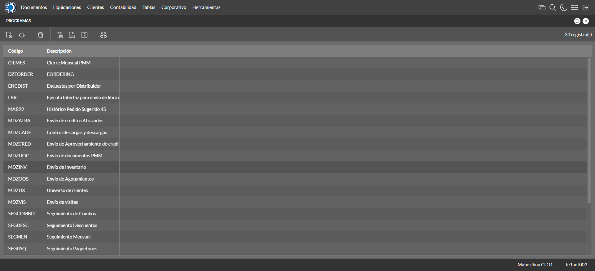
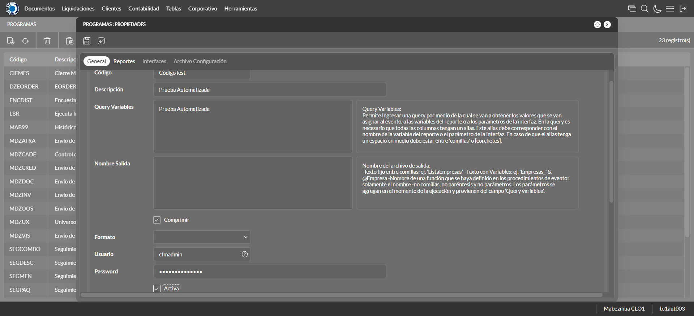
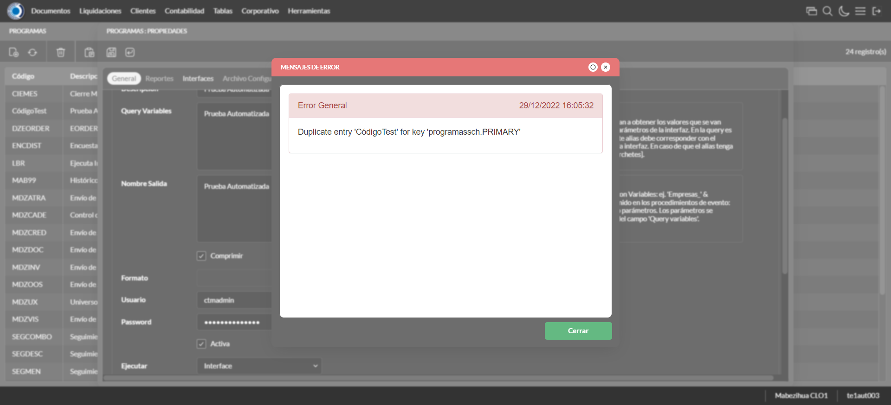
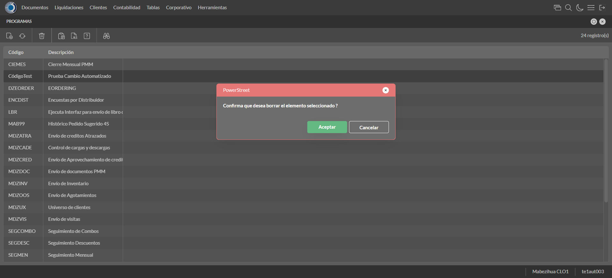

Desarrollado por : Area de Testing PWST
Fecha y hora de inicio : 2022-12-29 10:04:50
Duracion : 0:01:05.624367
Resultado : Total 8，Correctos 7 ，Errores 1 ，Taza de resultado 87.50%
Resumen 87.50% Errores 1 Fallidos 0 Correctos 7 Test realizados 8
| Caso de Prueba | Total | Correctos | Fallido | Error | Detalles | Captura del error |
| ProgramaScheduler2.Test: Escenario 1 de Autorizaciones de Credito | 8 | 7 | 0 | 1 | Detalles | |
test |
ft1_1: 2022-12-29 10:04:51,624 - root - INFO - Se abre el chrome
2022-12-29 10:04:53,243 - root - INFO - Entra a la URL
2022-12-29 10:04:53,372 - root - INFO - Maximiza la pantalla
Traceback (most recent call last):
File "C:\Users\jsand\AppData\Local\Programs\Python\Python310\lib\site-packages\selenium-4.4.0-py3.10.egg\selenium\webdriver\remote\switch_to.py", line 87, in frame
frame_reference = self._driver.find_element(By.ID, frame_reference)
File "C:\Users\jsand\AppData\Local\Programs\Python\Python310\lib\site-packages\selenium-4.4.0-py3.10.egg\selenium\webdriver\remote\webdriver.py", line 856, in find_element
return self.execute(Command.FIND_ELEMENT, {
File "C:\Users\jsand\AppData\Local\Programs\Python\Python310\lib\site-packages\selenium-4.4.0-py3.10.egg\selenium\webdriver\remote\webdriver.py", line 434, in execute
self.error_handler.check_response(response)
File "C:\Users\jsand\AppData\Local\Programs\Python\Python310\lib\site-packages\selenium-4.4.0-py3.10.egg\selenium\webdriver\remote\errorhandler.py", line 243, in check_response
raise exception_class(message, screen, stacktrace)
selenium.common.exceptions.NoSuchElementException: Message: no such element: Unable to locate element: {"method":"css selector","selector":"[id="mainFrame"]"}
(Session info: chrome=108.0.5359.125)
Stacktrace:
Backtrace:
(No symbol) [0x0021F243]
(No symbol) [0x001A7FD1]
(No symbol) [0x0009D04D]
(No symbol) [0x000CC0B0]
(No symbol) [0x000CC22B]
(No symbol) [0x000FE612]
(No symbol) [0x000E85D4]
(No symbol) [0x000FC9EB]
(No symbol) [0x000E8386]
(No symbol) [0x000C163C]
(No symbol) [0x000C269D]
GetHandleVerifier [0x004B9A22+2655074]
GetHandleVerifier [0x004ACA24+2601828]
GetHandleVerifier [0x002C8C0A+619850]
GetHandleVerifier [0x002C7830+614768]
(No symbol) [0x001B05FC]
(No symbol) [0x001B5968]
(No symbol) [0x001B5A55]
(No symbol) [0x001C051B]
BaseThreadInitThunk [0x76796BD9+25]
RtlGetFullPathName_UEx [0x77B58FD2+1218]
RtlGetFullPathName_UEx [0x77B58F9D+1165]
(No symbol) [0x00000000]
During handling of the above exception, another exception occurred:
Traceback (most recent call last):
File "C:\Users\jsand\AppData\Local\Programs\Python\Python310\lib\site-packages\selenium-4.4.0-py3.10.egg\selenium\webdriver\remote\switch_to.py", line 90, in frame
frame_reference = self._driver.find_element(By.NAME, frame_reference)
File "C:\Users\jsand\AppData\Local\Programs\Python\Python310\lib\site-packages\selenium-4.4.0-py3.10.egg\selenium\webdriver\remote\webdriver.py", line 856, in find_element
return self.execute(Command.FIND_ELEMENT, {
File "C:\Users\jsand\AppData\Local\Programs\Python\Python310\lib\site-packages\selenium-4.4.0-py3.10.egg\selenium\webdriver\remote\webdriver.py", line 434, in execute
self.error_handler.check_response(response)
File "C:\Users\jsand\AppData\Local\Programs\Python\Python310\lib\site-packages\selenium-4.4.0-py3.10.egg\selenium\webdriver\remote\errorhandler.py", line 243, in check_response
raise exception_class(message, screen, stacktrace)
selenium.common.exceptions.NoSuchElementException: Message: no such element: Unable to locate element: {"method":"css selector","selector":"[name="mainFrame"]"}
(Session info: chrome=108.0.5359.125)
Stacktrace:
Backtrace:
(No symbol) [0x0021F243]
(No symbol) [0x001A7FD1]
(No symbol) [0x0009D04D]
(No symbol) [0x000CC0B0]
(No symbol) [0x000CC22B]
(No symbol) [0x000FE612]
(No symbol) [0x000E85D4]
(No symbol) [0x000FC9EB]
(No symbol) [0x000E8386]
(No symbol) [0x000C163C]
(No symbol) [0x000C269D]
GetHandleVerifier [0x004B9A22+2655074]
GetHandleVerifier [0x004ACA24+2601828]
GetHandleVerifier [0x002C8C0A+619850]
GetHandleVerifier [0x002C7830+614768]
(No symbol) [0x001B05FC]
(No symbol) [0x001B5968]
(No symbol) [0x001B5A55]
(No symbol) [0x001C051B]
BaseThreadInitThunk [0x76796BD9+25]
RtlGetFullPathName_UEx [0x77B58FD2+1218]
RtlGetFullPathName_UEx [0x77B58F9D+1165]
(No symbol) [0x00000000]
During handling of the above exception, another exception occurred:
Traceback (most recent call last):
File "C:\xampp\htdocs\versiones\automatizaciones\AutoPWST\02PSCH\testCase\ProgramaScheduler2.py", line 32, in test
self.driver.switch_to.frame("mainFrame")
File "C:\Users\jsand\AppData\Local\Programs\Python\Python310\lib\site-packages\selenium-4.4.0-py3.10.egg\selenium\webdriver\remote\switch_to.py", line 92, in frame
raise NoSuchFrameException(frame_reference)
selenium.common.exceptions.NoSuchFrameException: Message: mainFrame
|
|
||||
test_000: Ingresa a la base de datos |
pt1_2: 2022-12-29 10:04:56,503 - root - INFO - Escribe el usuario
2022-12-29 10:04:56,607 - root - INFO - Escribe la contraseña
2022-12-29 10:04:56,709 - root - INFO - Se dio clic en el boton ingresar
2022-12-29 10:04:57,438 - root - INFO - Ejecutar Enterprise
2022-12-29 10:05:01,508 - root - INFO - Cambia entre pestañas
|
|
||||
test_001: Abre menu y ejecuta pantalla |
pt1_3: 2022-12-29 10:05:13,006 - root - INFO - Abre la pantalla de Programas
2022-12-29 10:05:13,586 - root - INFO - La pantalla ejecutada es Programas.
2022-12-29 10:05:13,590 - root - INFO - Captura: C:\xampp\htdocs\versiones\automatizaciones\AutoPWST\02PSCH\report\img screen：20221229_10_05_13.png
2022-12-29 10:05:23,862 - root - INFO - Se presiona el boton 'Nuevo', para crear un nuevo registro.
|
 | ||||
test_002: Abre la ventana de nuevo y crear un registro |
pt1_4: 2022-12-29 10:05:24,415 - root - INFO - Se abrio la pantalla para el ingreso de un registro nuevo.
2022-12-29 10:05:24,444 - root - INFO - El campo 'Código' si se encuentra visible.
2022-12-29 10:05:24,474 - root - INFO - El campo 'Descripción' si se encuentra visible.
2022-12-29 10:05:24,504 - root - INFO - El campo 'Query Variables' si se encuentra visible.
2022-12-29 10:05:24,532 - root - INFO - El campo 'Comprimir' si se encuentra visible.
2022-12-29 10:05:24,564 - root - INFO - El campo 'Usuario' si se encuentra visible.
2022-12-29 10:05:24,595 - root - INFO - El campo 'Password' si se encuentra visible.
2022-12-29 10:05:24,623 - root - INFO - El campo 'Activa' si se encuentra visible.
2022-12-29 10:05:24,651 - root - INFO - El campo 'Ejecutar' si se encuentra visible.
2022-12-29 10:05:24,711 - root - INFO - Ingresa el Codigo del nuevo registro
2022-12-29 10:05:24,820 - root - INFO - Ingresa la Descripcion del nuevo registro
2022-12-29 10:05:24,921 - root - INFO - Ingresa los Query Variables del nuevo registro
2022-12-29 10:05:25,854 - root - INFO - Se dió doble click en el registro de Usuario.
2022-12-29 10:05:25,971 - root - INFO - Ingresa el Password del nuevo registro
2022-12-29 10:05:26,112 - root - INFO - Se dió click en el checkbox Activa.
2022-12-29 10:05:26,112 - root - INFO - Captura: C:\xampp\htdocs\versiones\automatizaciones\AutoPWST\02PSCH\report\img screen：20221229_10_05_26.png
2022-12-29 10:05:26,625 - root - INFO - Se dió click en la opción Interface.
2022-12-29 10:05:26,729 - root - INFO - Ingresa el Nombre Salida del nuevo registro
2022-12-29 10:05:26,786 - root - INFO - Se cambia a la Pestaña Interfaces para continuar con el nuevo registro.
2022-12-29 10:05:27,369 - root - INFO - El campo 'Sistema' si se encuentra visible.
2022-12-29 10:05:27,400 - root - INFO - El campo 'Interface' si se encuentra visible.
2022-12-29 10:05:28,327 - root - INFO - Se dió doble click en el registro de Sistema.
2022-12-29 10:05:29,467 - root - INFO - Se dió doble click en el registro de Interface.
2022-12-29 10:05:29,685 - root - INFO - Se da clic en el boton Guardar; se debe crear un nuevo registro.
|
 | ||||
test_003: Repetir el registro creado anteriormente |
pt1_5: 2022-12-29 10:05:29,940 - root - INFO - Se presiona el boton 'Refrescar', para crear un nuevo registro igual al anterior.
2022-12-29 10:05:30,162 - root - INFO - Se presiona el boton 'Nuevo', para crear un nuevo registro igual al anterior.
2022-12-29 10:05:30,731 - root - INFO - Se abrio la pantalla para el ingreso de un registro nuevo.
2022-12-29 10:05:30,760 - root - INFO - El campo 'Código' si se encuentra visible.
2022-12-29 10:05:30,787 - root - INFO - El campo 'Descripción' si se encuentra visible.
2022-12-29 10:05:30,816 - root - INFO - El campo 'Query Variables' si se encuentra visible.
2022-12-29 10:05:30,842 - root - INFO - El campo 'Comprimir' si se encuentra visible.
2022-12-29 10:05:30,870 - root - INFO - El campo 'Usuario' si se encuentra visible.
2022-12-29 10:05:30,898 - root - INFO - El campo 'Password' si se encuentra visible.
2022-12-29 10:05:30,926 - root - INFO - El campo 'Activa' si se encuentra visible.
2022-12-29 10:05:30,953 - root - INFO - El campo 'Ejecutar' si se encuentra visible.
2022-12-29 10:05:31,012 - root - INFO - Ingresa el Codigo del nuevo registro
2022-12-29 10:05:31,098 - root - INFO - Ingresa la Descripcion del nuevo registro
2022-12-29 10:05:31,183 - root - INFO - Ingresa los Query Variables del nuevo registro
2022-12-29 10:05:32,129 - root - INFO - Se dió doble click en el registro de Usuario.
2022-12-29 10:05:32,233 - root - INFO - Ingresa el Password del nuevo registro
2022-12-29 10:05:32,360 - root - INFO - Se dió click en el checkbox Activa.
2022-12-29 10:05:32,730 - root - INFO - Se dió click en la opción Interface.
2022-12-29 10:05:32,824 - root - INFO - Ingresa el Nombre Salida del nuevo registro
2022-12-29 10:05:32,870 - root - INFO - Se da clic en el boton Guardar; se debe crear un nuevo registro.
2022-12-29 10:05:33,883 - root - INFO - Captura: C:\xampp\htdocs\versiones\automatizaciones\AutoPWST\02PSCH\report\img screen：20221229_10_05_33.png
2022-12-29 10:05:39,386 - root - INFO - Se presiona el boton 'Cerrar', para cerrar el mensaje de duplicidad de llave primaria
2022-12-29 10:05:40,401 - root - INFO - Captura: C:\xampp\htdocs\versiones\automatizaciones\AutoPWST\02PSCH\report\img screen：20221229_10_05_40.png
2022-12-29 10:05:40,688 - root - INFO - Se presiona el boton 'Cerrar', para cerrar el mensaje de duplicidad de llave primaria
2022-12-29 10:05:40,803 - root - INFO - Se presiona el boton 'Cerrar', para cerrar la ventana
|
 | ||||
test_004: Modificar el registro |
pt1_6: 2022-12-29 10:05:40,908 - root - INFO - Se presiona el boton 'Refrescar', para proceder a modificar el registro.
2022-12-29 10:05:42,552 - root - INFO - Se da clic en el registro creado, para proceder a modificarlo.
2022-12-29 10:05:43,224 - root - INFO - Se modifica el contenido del campo Descripción
2022-12-29 10:05:43,368 - root - INFO - Se modifica el contenido del campo Query Variables
2022-12-29 10:05:43,421 - root - INFO - Se dió click en el checkbox Comprimir.
2022-12-29 10:05:44,594 - root - INFO - Se dió doble click en el registro de usuario.
2022-12-29 10:05:44,739 - root - INFO - Se modifica el contenido del campo Password
2022-12-29 10:05:44,811 - root - INFO - Se dió click en el checkbox Activa.
2022-12-29 10:05:45,213 - root - INFO - Se dió click en la opción Interface.
2022-12-29 10:05:45,344 - root - INFO - Se modifica el contenido del campo Nombre Salida
2022-12-29 10:05:45,420 - root - INFO - Se cambia a la pestaña Interfaces para continuar con la modificación del registro.
2022-12-29 10:05:46,841 - root - INFO - Se dió doble click en el registro de Sistema.
2022-12-29 10:05:47,922 - root - INFO - Se dió doble click en el registro de Interface.
2022-12-29 10:05:48,128 - root - INFO - Se da clic en el boton Guardar; se debe modificar la informacion del registro.
|
|
||||
test_005: Eliminar el registro creado |
pt1_7: 2022-12-29 10:05:48,377 - root - INFO - Se presiona el boton 'Refrescar', para proceder a eliminar el registro.
2022-12-29 10:05:49,989 - root - INFO - Se da clic en el registro creado, para proceder a eliminarlo.
2022-12-29 10:05:50,055 - root - INFO - Se presiona el boton 'Eliminar', para eliminar el registro.
2022-12-29 10:05:51,066 - root - INFO - Captura: C:\xampp\htdocs\versiones\automatizaciones\AutoPWST\02PSCH\report\img screen：20221229_10_05_51.png
2022-12-29 10:05:51,265 - root - INFO - Se confirma el eliminado del registro
2022-12-29 10:05:51,563 - root - INFO - Se presiona el boton 'Refrescar', para verificar si el registro ha sido eliminado
2022-12-29 10:05:51,840 - root - INFO - Se presiona el boton 'Cerrar', para cerrar la pantalla de Programas Scheduler.
|
 | ||||
test_006: Cerrar_Navegador |
pt1_8: 2022-12-29 10:05:56,117 - root - INFO - Se cierra chrome
|
|
||||
| Caso de prueba | 8 | 7 | 0 | 1 | Taza de resultado：87.50% | |